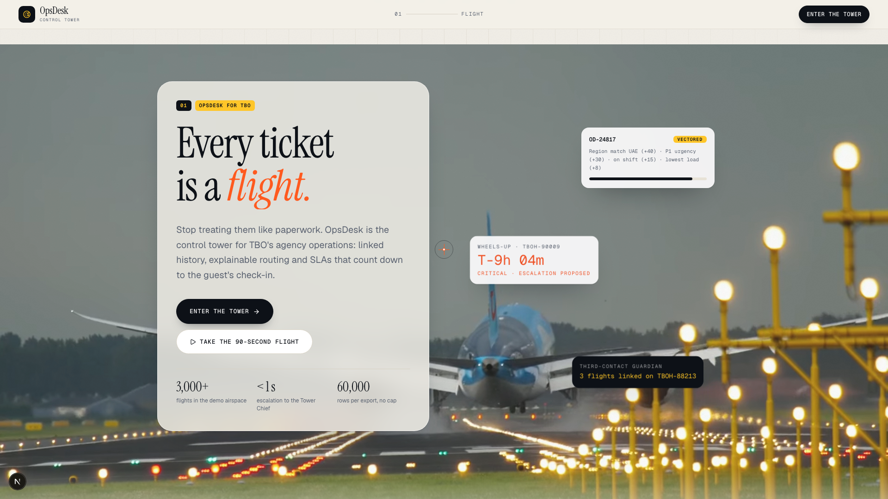
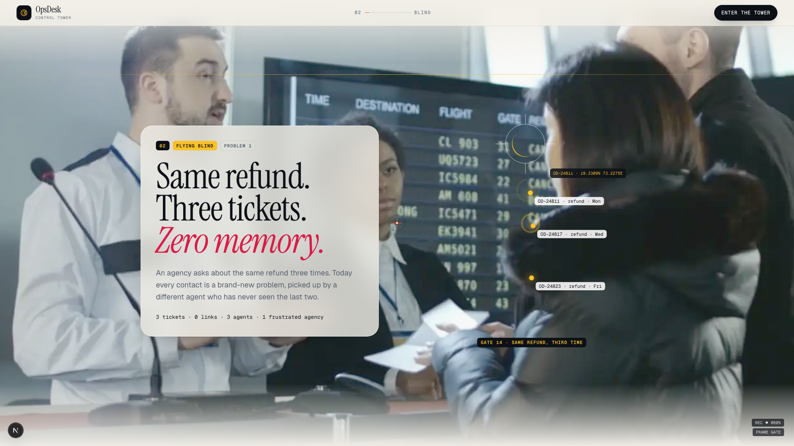
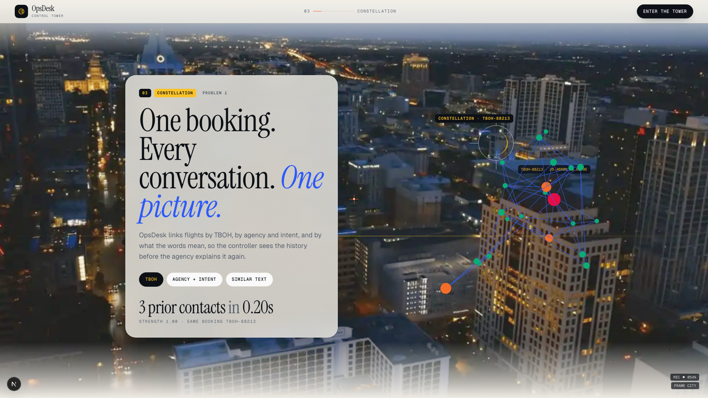
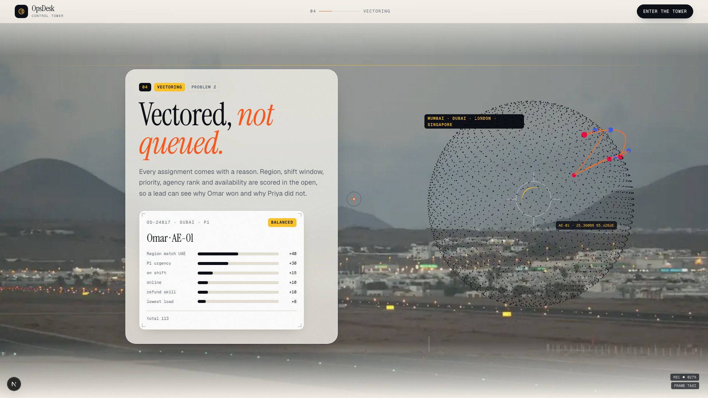
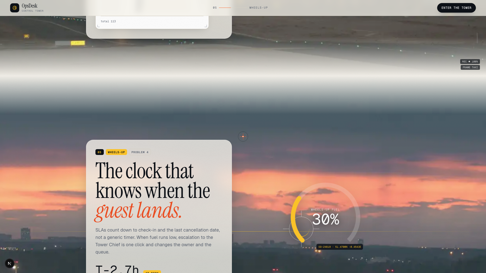
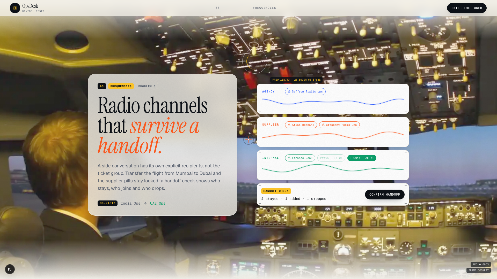
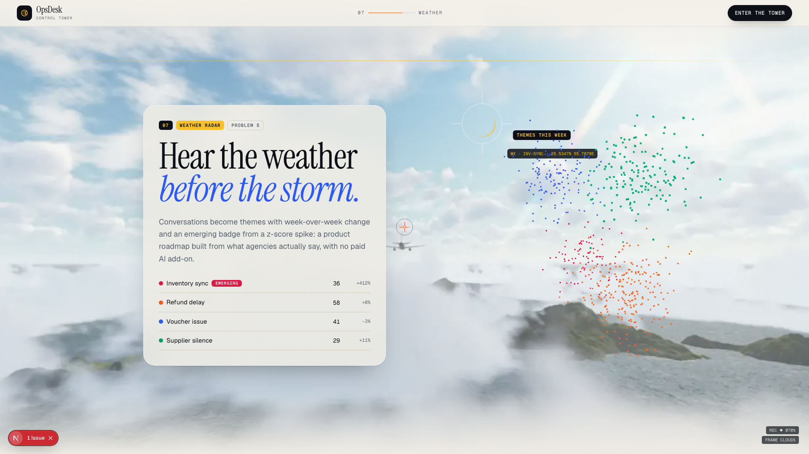
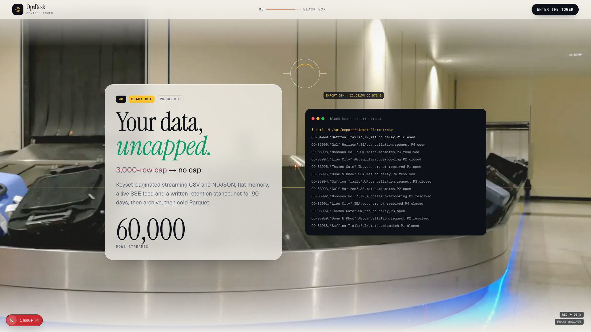

2:04 AM.
The guest has landed.
The hotel has no booking.
It is two in the morning in Dubai.
A guest has just landed, and the hotel has no record of the booking.
What TBO ops sees
Thousands of tickets a day
01Refund delays
Money stuck between supplier, TBO and agency.
02Lost bookings
Hotel cannot find the reservation at check-in.
03Missing vouchers
Guest at the counter with nothing to show.
The travel agency raises a ticket with TBO.
Refund delays, lost bookings, missing vouchers.
Thousands of them, every day.
Problem 1
No memory between tickets
01Ticket 1
"Refund for TBOH-88213 not received."
02Ticket 2
"Following up on the same refund..."
03Ticket 3
"Third time asking. Guest keeps calling."
But every ticket arrives with no context.
The agency explains the same booking three times, to three different people.
NO HISTORY
NO SMART ROUTING
NO TRAVEL DEADLINE
3K ROW CAP
Routing is first come, first served.
Deadlines ignore the guest's check-in.
And reports stop at three thousand rows.
OpsDesk Control Tower
Every ticket is a flight. Tracked · Routed · On time.
So we built OpsDesk Control Tower.
Every ticket is treated like a flight: tracked, routed, and timed to land.
00LANDING/




It opens with a landing page that tells the story in plain words, scene by scene, so anyone understands it in a minute.
00LANDING/




Linked history.
Explainable routing.
Deadlines that count down to check-in.
And real-time insight for every role.
SIGN INSIGN IN/login
Choose your callsign
Pilot, Controller, Tower Chief, Director, Supplier
RBAC in one module
Cross-agency reads return 404, tested
One sign-in, six personas.
Role-based access means an agency can never see another agency's tickets.
01THE PILOT · AGENCY/pilot
Booking auto-filled
Hotel, guest, check-in and last cancellation date
Third-Contact Guardian
"You have 2 earlier cases": continue one, no repeats
Meet the Pilot: the travel agency.
They type what happened and the booking ID.
OpsDesk instantly pulls the hotel, the check-in date, and two earlier cases on the same booking.
01THE PILOT · AGENCY/pilot
Intent auto-suggest
TF-IDF + MiniLM ensemble, 88% on hand-written text
Departures board
Live status and ETA for every case
As they type, a pretrained MiniLM model suggests the intent, with its confidence.
Then the case flies onto their departures board.
02THE CONTROLLER · AGENT/tower/queue
Lowest fuel first
Sorted by time left to the guest's check-in
Wheels-Up SLA
Priority × check-in: within 12 h the clock runs 4× faster
Now the Controller, our ops agent.
Their queue is sorted by fuel left: how close each guest is to check-in, not who wrote first.
02THE CONTROLLER · AGENT/tower/t/OD-26434
Linked flights
Same booking 1.00 · same agency + intent 0.80
Wheels-up clock
Counts down to check-in, not office hours
Breach Forecast
Monte Carlo on 217 past cases: escalate, reassign or call supplier?
Open a flight and the whole story is on one screen.
Linked history.
The agency's churn risk.
A wheels-up clock.
And a breach forecast that asks: what if I act now?
02THE CONTROLLER · AGENT/tower/links
Constellation
3D graph of every case linked to TBOH-88213
Why this agent?
Region +40 · urgency +30 · on shift +15 · lowest load +8
Every routing decision explains itself, and the Constellation draws all cases on one booking as a live star map.
02THE CONTROLLER · AGENT⌘K
Ask the Tower
"critical refunds in UAE" becomes filters, with chips that explain them
Tower Radio
Browser speech in, spoken answers out
And anyone can ask the tower in plain English, or simply talk to Tower Radio, our voice assistant.
03THE TOWER CHIEF · ESCALATIONS/tower/escalations
Escalation in < 1 s
Pushed live over server-sent events
When an agent escalates, the Tower Chief sees it in under a second, with the reason, sorted by check-in.
03THE TOWER CHIEF · ESCALATIONS/tower/storms
Storm Cell
5+ cases · one supplier · 60 minutes → one incident
If five agencies report the same hotel within an hour, Storm Cells merge them into one incident, answered with one broadcast.
03THE TOWER CHIEF · ESCALATIONS/tower/handoffs
Follow-the-Sun
India → UAE → UK → Singapore, holiday calendars built in
At shift end, Follow-the-Sun hands urgent cases to the region starting its day, skipping public holidays, with a written handoff brief.
04THE DIRECTOR · OPS LEAD/tower
Airspace radar
Every open case, coloured by SLA state
The Director, our ops lead, sees the whole airspace: live radar, SLA risk and queue health.
04THE DIRECTOR · OPS LEAD/tower/roster
HR-aware routing
Darwinbox adapter, live or simulated
Crew Roster syncs leave and shifts from Darwinbox HR.
Nobody on leave gets work, and their open cases are re-routed in one click.
04THE DIRECTOR · OPS LEAD/tower/ghosts
Ghost Flights
Gradient boosting on supplier lag, check-in and rate changes
Ghost Flights predicts which bookings will turn into tickets, so the team can fix them before the agency even writes in.
04THE DIRECTOR · OPS LEAD/tower/simulate
Replay the day
4 parallel lanes per controller, in-flight load
The simulator replays a real day under four routing rules, so leads pick the winner with evidence, not guesswork.
04THE DIRECTOR · OPS LEAD/tower/data
Uncapped export
Keyset streaming CSV / NDJSON with a live counter
And the Black Box streams exports with no three-thousand-row cap, sixty thousand rows and beyond.
05PRODUCT · INSIGHTS/tower/insights
Emerging theme
z-score ≥ 2.5 and 2.5× the 4-week mean
For the product team, Weather Radar turns ticket themes into a heat map and flags emerging spikes.
06SUPPLIER PARTNER/partner
Partner portal
Sees only its own channels, quick replies
Suppliers get their own portal.
They reply on the ticket itself, instead of in long email chains.
And on the ops floor, Wall Mode puts the live board on a TV.
Under the hood · system architecture
CLIENTSLanding · Tower · Pilot · Partner · Wall Mode · Tower Radio · ⌘K
HTTPS · httpOnly JWT cookie
EDGE · Next.js 15same-origin /api proxy · SSE pass-through · security headers
REST + Server-Sent Events
API · FastAPI + Pydantic v2RBAC · tickets · links · frequencies · partner · insights · export · stream
EXTERNALDarwinbox HRMS
Supplier partners
Holiday calendars
pure function calls · SQL
ENGINES16 pure engines, each returns a reason
DATASQLite WAL / PostgreSQL · Alembic · audit log
JOBSSLA tick every 60 s → live push
Under the hood, a Next.js front end talks to a FastAPI back end over REST, with live updates over server-sent events.
Pure engines · no database, no network
16 engines. Every output has a reason.
Vectoring
Wheels-Up SLA
Linker
Intent
Weather
Ghosts
Forecast
Storms
Roster
Follow-the-Sun
Frustration
Promises
Simulator
Ask the Tower
Co-pilot
Tower Radio
“Routed to Omar: region match UAE +40 · P1 urgency +30 · on shift +15 · lowest load +8”
Sixteen pure engines handle routing, deadlines, linking and forecasting, and every single output carries a human-readable reason.
Tech stack · free, open source, CPU only
BackendPython 3.12FastAPIPydantic v2SQLAlchemy 2AlembicAPScheduler
AI / MLMiniLM (ONNX)scikit-learnVADERNumPynetworkx
FrontendNext.js 15React 19Tailwind 4React Three FiberGSAP
Data · QualitySQLite / PostgresDarwinboxpytestPlaywrightLighthouse 97
Pretrained models run on a laptop CPU, data lives in SQLite or Postgres, and Darwinbox plugs in for HR.
No paid add-ons.
Impact · measured on the prototype
0repeat explanations
< 1 sto escalate
76 → 88%intent accuracy
60K+rows per export
The result: zero repeat explanations, escalations in under a second, and intent accuracy up from seventy-six to eighty-eight percent.
OpsDesk Control Tower
Swayam Panchal · Jeevesh Bodhani · Rishit Lahoti · Shreyas Kale
Dept. of AI & Data Science · Dwarkadas J. Sanghvi College of Engineering · TBO VoyageHack · PS3
github.com/SDP42/OpsDesk
OpsDesk Control Tower.
Every ticket is a flight, and every flight lands on time.
Built by Swayam Panchal, Jeevesh Bodhani, Rishit Lahoti and Shreyas Kale.